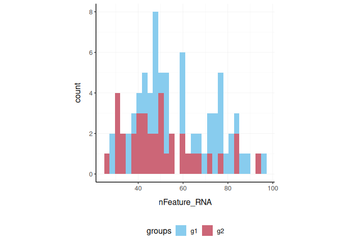
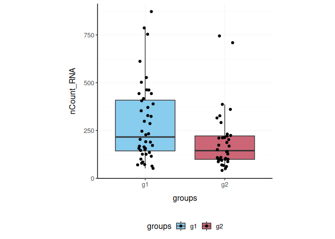

Brings Seurat to the tidyverse!
website: stemangiola.github.io/tidyseurat/
Please have a look also to
- tidybulk for tidy high-level data analysis and manipulation
- nanny for tidy high-level data analysis and manipulation
- tidygate for adding custom gate information to your tibble
- tidyHeatmap for heatmaps produced with tidy principles
Installation
From CRAN (in submission)
install.packages("tidyseurat")
From Github
devtools::install_github("stemangiola/tidyseurat")
Create tidyseurat, the best of both worlds!
This is a seurat object but it is evaluated as tibble. So it is fully compatible both with Seurat and tidyverse APIs.
pbmc_small_tidy = tidyseurat::pbmc_small %>% tidy()
It looks like a tibble
pbmc_small_tidy
## # A tibble: 80 x 15
## cell orig.ident nCount_RNA nFeature_RNA RNA_snn_res.0.8 letter.idents groups
## <chr> <fct> <dbl> <int> <fct> <fct> <chr>
## 1 ATGC… SeuratPro… 70 47 0 A g2
## 2 CATG… SeuratPro… 85 52 0 A g1
## 3 GAAC… SeuratPro… 87 50 1 B g2
## 4 TGAC… SeuratPro… 127 56 0 A g2
## 5 AGTC… SeuratPro… 173 53 0 A g2
## 6 TCTG… SeuratPro… 70 48 0 A g1
## 7 TGGT… SeuratPro… 64 36 0 A g1
## 8 GCAG… SeuratPro… 72 45 0 A g1
## 9 GATA… SeuratPro… 52 36 0 A g1
## 10 AATG… SeuratPro… 100 41 0 A g1
## # … with 70 more rows, and 8 more variables: RNA_snn_res.1 <fct>, PC_1 <dbl>,
## # PC_2 <dbl>, PC_3 <dbl>, PC_4 <dbl>, PC_5 <dbl>, tSNE_1 <dbl>, tSNE_2 <dbl>But it is a seurat object afterall
pbmc_small_tidy@assays
Preliminary plots
We can treat pbmc_small_tidy effectively as a normal tibble.
Here we plot number of transcripts per cell
pbmc_small_tidy %>% tidyseurat::ggplot(aes(nFeature_RNA, fill=groups)) + geom_histogram() + my_theme

Here we plot total transcriptional material per cell
pbmc_small_tidy %>% tidyseurat::ggplot(aes(groups, nCount_RNA, fill=groups)) + geom_boxplot(outlier.shape = NA) + geom_jitter(width = 0.1) + my_theme

Here we plot abundance of two transcripts for each group
pbmc_small_tidy %>% join_transcripts(transcripts = c("HLA-DRA" , "LYZ" )) %>% ggplot(aes(groups, abundance_RNA + 1, fill=groups)) + geom_boxplot(outlier.shape = NA) + geom_jitter(aes(size=nCount_RNA), alpha=0.5, width = 0.2) + scale_y_log10() + my_theme

Preprocess the dataset
Also you can treat the object as Seurat object and proceed with data processing.
pbmc_small_pca = pbmc_small_tidy %>% SCTransform(verbose = FALSE) %>% FindVariableFeatures(verbose = FALSE) %>% RunPCA(verbose = FALSE) pbmc_small_pca
## # A tibble: 80 x 17
## cell orig.ident nCount_RNA nFeature_RNA RNA_snn_res.0.8 letter.idents groups
## <chr> <fct> <dbl> <int> <fct> <fct> <chr>
## 1 ATGC… SeuratPro… 70 47 0 A g2
## 2 CATG… SeuratPro… 85 52 0 A g1
## 3 GAAC… SeuratPro… 87 50 1 B g2
## 4 TGAC… SeuratPro… 127 56 0 A g2
## 5 AGTC… SeuratPro… 173 53 0 A g2
## 6 TCTG… SeuratPro… 70 48 0 A g1
## 7 TGGT… SeuratPro… 64 36 0 A g1
## 8 GCAG… SeuratPro… 72 45 0 A g1
## 9 GATA… SeuratPro… 52 36 0 A g1
## 10 AATG… SeuratPro… 100 41 0 A g1
## # … with 70 more rows, and 10 more variables: RNA_snn_res.1 <fct>,
## # nCount_SCT <dbl>, nFeature_SCT <int>, PC_1 <dbl>, PC_2 <dbl>, PC_3 <dbl>,
## # PC_4 <dbl>, PC_5 <dbl>, tSNE_1 <dbl>, tSNE_2 <dbl>If a tool is not included in the tidyseurat collection, we can use as_tibble to permanently convert tidyseurat into tibble
Identify clusters
We proceed with cluster identification
pbmc_small_cluster = pbmc_small_pca %>% FindNeighbors(verbose=FALSE) %>% FindClusters(method = "igraph", verbose=FALSE ) pbmc_small_cluster
## # A tibble: 80 x 19
## cell orig.ident nCount_RNA nFeature_RNA RNA_snn_res.0.8 letter.idents groups
## <chr> <fct> <dbl> <int> <fct> <fct> <chr>
## 1 ATGC… SeuratPro… 70 47 0 A g2
## 2 CATG… SeuratPro… 85 52 0 A g1
## 3 GAAC… SeuratPro… 87 50 1 B g2
## 4 TGAC… SeuratPro… 127 56 0 A g2
## 5 AGTC… SeuratPro… 173 53 0 A g2
## 6 TCTG… SeuratPro… 70 48 0 A g1
## 7 TGGT… SeuratPro… 64 36 0 A g1
## 8 GCAG… SeuratPro… 72 45 0 A g1
## 9 GATA… SeuratPro… 52 36 0 A g1
## 10 AATG… SeuratPro… 100 41 0 A g1
## # … with 70 more rows, and 12 more variables: RNA_snn_res.1 <fct>,
## # nCount_SCT <dbl>, nFeature_SCT <int>, SCT_snn_res.0.8 <fct>,
## # seurat_clusters <fct>, PC_1 <dbl>, PC_2 <dbl>, PC_3 <dbl>, PC_4 <dbl>,
## # PC_5 <dbl>, tSNE_1 <dbl>, tSNE_2 <dbl>Now we can interrogate the object as if it was a regular tibble data frame
pbmc_small_cluster %>% tidyseurat::count(groups, seurat_clusters)
## # A tibble: 8 x 3
## # Groups: groups [2]
## groups seurat_clusters n
## <chr> <fct> <int>
## 1 g1 0 17
## 2 g1 1 14
## 3 g1 2 9
## 4 g1 3 4
## 5 g2 0 13
## 6 g2 1 12
## 7 g2 2 6
## 8 g2 3 5We can identify cluster markers using Seurat
# Identify markers markers = pbmc_small_cluster %>% FindAllMarkers(only.pos = TRUE, min.pct = 0.25, thresh.use = 0.25) %>% group_by(cluster) %>% top_n(10, avg_logFC) # Plot heatmap pbmc_small_cluster %>% DoHeatmap(features = markers$gene)

Reduce dimensions
We can calculate the first 3 UMAP dimensions using Seurat framework
pbmc_small_UMAP = pbmc_small_cluster %>% RunUMAP(reduction = "pca", dims = 1:15, n.components = 3L, )
and we can plot them using 3D plot using plotly
pbmc_small_UMAP %>% plot_ly( x = ~`UMAP_1`, y = ~`UMAP_2`, z = ~`UMAP_3`, color = ~ seurat_clusters )

Cell type prediction
We can infer cell type identities using singleR
blueprint = SingleR::BlueprintEncodeData() cell_type_df = pbmc_small_UMAP@assays[["SCT"]]@counts %>% log1p %>% Matrix::Matrix(sparse = TRUE) %>% SingleR::SingleR( ref = blueprint , labels = blueprint$label.main, method = "single" ) %>% as.data.frame() %>% as_tibble(rownames="cell") %>% select(cell, first.labels)
pbmc_small_cell_type = pbmc_small_UMAP %>% left_join(cell_type_df, by="cell") pbmc_small_cell_type %>% tidyseurat::select(cell, first.labels, everything())
## # A tibble: 80 x 23
## cell first.labels orig.ident nCount_RNA nFeature_RNA RNA_snn_res.0.8
## <chr> <chr> <fct> <dbl> <int> <fct>
## 1 ATGC… CD4+ T-cells SeuratPro… 70 47 0
## 2 CATG… CD8+ T-cells SeuratPro… 85 52 0
## 3 GAAC… CD8+ T-cells SeuratPro… 87 50 1
## 4 TGAC… CD4+ T-cells SeuratPro… 127 56 0
## 5 AGTC… CD4+ T-cells SeuratPro… 173 53 0
## 6 TCTG… CD4+ T-cells SeuratPro… 70 48 0
## 7 TGGT… CD4+ T-cells SeuratPro… 64 36 0
## 8 GCAG… CD4+ T-cells SeuratPro… 72 45 0
## 9 GATA… CD4+ T-cells SeuratPro… 52 36 0
## 10 AATG… CD4+ T-cells SeuratPro… 100 41 0
## # … with 70 more rows, and 17 more variables: letter.idents <fct>,
## # groups <chr>, RNA_snn_res.1 <fct>, nCount_SCT <dbl>, nFeature_SCT <int>,
## # SCT_snn_res.0.8 <fct>, seurat_clusters <fct>, PC_1 <dbl>, PC_2 <dbl>,
## # PC_3 <dbl>, PC_4 <dbl>, PC_5 <dbl>, tSNE_1 <dbl>, tSNE_2 <dbl>,
## # UMAP_1 <dbl>, UMAP_2 <dbl>, UMAP_3 <dbl>We can easily summarise the results. For example, see how cell type classification overlaps with cluster classification.
pbmc_small_cell_type %>% count(seurat_clusters, first.labels)
## # A tibble: 9 x 3
## seurat_clusters first.labels n
## <fct> <chr> <int>
## 1 0 CD4+ T-cells 0
## 2 0 CD8+ T-cells 0
## 3 0 NK cells 0
## 4 1 Macrophages 0
## 5 1 Monocytes 0
## 6 2 B-cells 0
## 7 2 Macrophages 0
## 8 2 Monocytes 0
## 9 3 Erythrocytes 0We can easily reshape the data for building information-rish faceted plots
pbmc_small_cell_type %>% # Reshaping pivot_longer( cols=c(seurat_clusters, first.labels), names_to = "classifier", values_to = "label" ) %>% # Plotting ggplot(aes(UMAP_1, UMAP_2, color=label)) + geom_point() + facet_wrap(~classifier) + my_theme

We can easily plot gene correlation per cell category, adding multi-layer annotations
pbmc_small_cell_type %>% # Add mitochondrial abundance mutate(mitochondrial = rnorm(n())) %>% # Plot correlation join_transcripts(transcripts = c("CST3" , "LYZ" ), shape = "wide") %>% ggplot(aes(CST3 +1, LYZ + 1, color=groups, size=mitochondrial)) + geom_point() + facet_wrap(~first.labels, scales = "free") + scale_x_log10() + scale_y_log10() + my_theme
 ## Nested analyses A powerful tool we can use with tidyseurat is
## Nested analyses A powerful tool we can use with tidyseurat is nest. We can easily perform independent analyses on subsets of the dataset. First we classify cell types in lymphoid and myeloid; then, nest based on the new classification
pbmc_small_nested = pbmc_small_cell_type %>% filter(first.labels != "Erythrocytes") %>% mutate(cell_class = if_else(`first.labels` %in% c("Macrophages", "Monocytes"), "myeloid", "lmphoid")) %>% nest(data = -cell_class) pbmc_small_nested
## # A tibble: 2 x 2
## cell_class data
## <chr> <list>
## 1 lmphoid <tidysert>
## 2 myeloid <tidysert>Now we can independently (i) find variable features, (ii) reduce dimensions, and (iii) cluster. Using both tidyverse and Seurat seamlessy
pbmc_small_nested_reanalysed = pbmc_small_nested %>% mutate(data = map( data, ~ .x %>% FindVariableFeatures(verbose = FALSE) %>% RunPCA(npcs = 10, verbose = FALSE) %>% FindNeighbors(verbose = FALSE) %>% FindClusters(method = "igraph" , verbose = FALSE) %>% RunUMAP(reduction = "pca", dims = 1:10, n.components = 3L, verbose = FALSE) )) pbmc_small_nested_reanalysed
## # A tibble: 2 x 2
## cell_class data
## <chr> <list>
## 1 lmphoid <tidysert>
## 2 myeloid <tidysert>Now we can unnest and plot the new clasification
pbmc_small_nested_reanalysed %>% # Convert to tibble otherwise Seurat drops reduced dimensions when unifying data sets. mutate(data = map(data, ~ .x %>% as_tibble)) %>% unnest(data) %>% # Define unique clusters unite("cluster", c(cell_class, seurat_clusters), remove=FALSE) %>% # Plotting ggplot(aes(UMAP_1, UMAP_2, color=cluster)) + geom_point() + facet_wrap(~cell_class) + my_theme